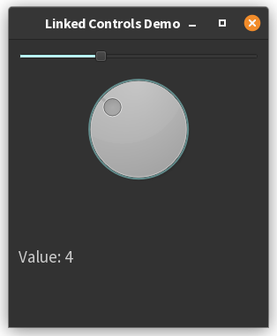

2. Example with a slider and a dial¶
Here’s a PyQt6 example with a slider, dial, and label that stay synchronized (values 1-10):
import sys
from PyQt6.QtWidgets import QApplication, QWidget, QSlider, QDial, QLabel, QVBoxLayout
from PyQt6.QtCore import Qt
class LinkedControlsApp(QWidget):
def __init__(self):
super().__init__()
self.init_ui()
def init_ui(self):
layout = QVBoxLayout()
# Create controls with range 1-10
self.slider = QSlider(Qt.Orientation.Horizontal)
self.dial = QDial()
self.label = QLabel("Value: 1")
# Set ranges
self.slider.setRange(1, 10)
self.dial.setRange(1, 10)
# Add to layout
layout.addWidget(self.slider)
layout.addWidget(self.dial)
layout.addWidget(self.label)
self.setLayout(layout)
# Connect signals with loop prevention
self.slider.valueChanged.connect(self.update_controls)
self.dial.valueChanged.connect(self.update_controls)
def update_controls(self, value):
# Prevent signal loops
sender = self.sender()
if isinstance(sender, QSlider):
widget = self.dial
else:
widget = self.slider
widget.blockSignals(True)
widget.setValue(value)
widget.blockSignals(False)
self.label.setText(f"Value: {value}")
if __name__ == "__main__":
app = QApplication(sys.argv)
window = LinkedControlsApp()
window.setWindowTitle("Linked Controls Demo")
window.show()
sys.exit(app.exec())

Key Features¶
-
Synchronized Controls (
QSliderandQDial):- Moving either control updates the other instantly[4]
blockSignals()prevents infinite update loops[4]
-
Value Display (
QLabel):- Automatically shows current value (1-10)
- Updates on any control change
-
Range Management:
- Both controls restricted to 1-10 using
setRange() - Integer-only values by default
- Both controls restricted to 1-10 using
Usage¶
- Slide the horizontal slider or rotate the dial
- Both controls and label will stay synchronized
- Values wrap automatically between 1 and 10
This demonstrates PyQt6’s signal/slot mechanism while handling common synchronization challenges in GUI development[1][4].
References
- [1] https://www.w3resource.com/python-exercises/pyqt/python-pyqt-connecting-signals-to-slots-exercise-10.php
- [2] https://forum.qt.io/topic/44417/placing-a-label-next-to-a-slider-handle
- [3] https://doc.qt.io/qtforpython-6/PySide6/QtWidgets/QRadioButton.html
- [4] https://stackoverflow.com/questions/75156906/how-to-make-a-slider-which-has-a-label-can-show-above-the-handle-with-pyside2
- [5] https://www.youtube.com/watch?v=Adg2zQaAF-g
- [6] https://stackoverflow.com/questions/76745611/pyqt6-slider-not-moving
- [7] https://stackoverflow.com/questions/43251692/how-to-make-button-like-radiobuttons-in-pyqt
- [8] https://forum.qt.io/topic/159776/accessibility-issue-with-radio-buttons-in-pyqt6-setting
- [9] https://www.reddit.com/r/Python/comments/wedvzi/what_is_the_best_gui_library_for_python/
- [10] https://stackoverflow.com/questions/53532276/how-to-display-the-range-values-in-slider
- [11] https://www.qtcentre.org/threads/3904-array-of-radio-buttons
- [12] https://www.pythonguis.com/tutorials/pyqt6-widgets/
- [13] https://doc.qt.io/qtforpython-5/PySide2/QtWidgets/QSlider.html
- [14] https://www.pythonguis.com/tutorials/pyside6-widgets/
- [15] https://forum.qt.io/topic/22609/qslider-needs-to-step-with-custom-step-value-on-mouse-slide
- [16] https://coderslegacy.com/python/pyqt6-qradiobutton/
- [17] https://pysdr.org/content/pyqt.html
- [18] https://www.youtube.com/watch?v=DZ3-ij_JHE0
- [19] https://stackoverflow.com/questions/68931326/how-switch-between-two-graphs-and-maintain-radio-button-and-slider-updates-worki
- [20] https://stackoverflow.com/questions/47494941/python-pyqt4-qslider-interval-bigger-than-1
Alternative version with an instance attribute¶
Here’s a modified version of LinkedControlsApp that explicitly stores the current value in an instance attribute
and uses a setter method to handle updates:
import sys
from PyQt6.QtWidgets import QApplication, QWidget, QSlider, QDial, QLabel, QVBoxLayout
from PyQt6.QtCore import Qt
import qdarktheme
class DialWithLabel(QWidget):
"""
Composite widget that groups a QDial and a QLabel.
The label always displays the current value of the dial.
This widget provides a setValue method to update both the dial and the label together.
"""
def __init__(self, min_val, max_val):
"""
Initialize the dial and label, and set up the layout.
Args:
min_val (int): Minimum value for the dial.
max_val (int): Maximum value for the dial.
"""
super().__init__()
self.dial = QDial()
self.label = QLabel()
# Configure dial
self.dial.setNotchesVisible(True)
self.dial.setRange(min_val, max_val)
# Configure label
self.label.setAlignment(Qt.AlignmentFlag.AlignCenter)
# Arrange widgets vertically
layout = QVBoxLayout()
layout.addWidget(self.dial)
layout.addWidget(self.label)
self.setLayout(layout)
def setValue(self, value):
"""
Set the value of the dial and update the label to match.
Args:
value (int): The value to set on the dial and display on the label.
"""
self.dial.setValue(value)
self.label.setText(f"Value: {value}")
class LinkedControlsApp(QWidget):
"""
Main application window.
Contains a QSlider and a DialWithLabel.
Keeps both controls synchronized, so changing one updates the other.
"""
def __init__(self):
"""
Initialize the application window and controls.
"""
super().__init__()
self.current_value = 1 # Stores the current value shared by the slider and dial
self.init_ui()
def init_ui(self):
"""
Set up the user interface, connect signals, and initialize control values.
"""
layout = QVBoxLayout()
# Create slider and composite dial-with-label widget
self.slider = QSlider(Qt.Orientation.Horizontal)
self.dial_widget = DialWithLabel(1, 10)
# Set slider range to match the dial
self.slider.setRange(1, 10)
# Add widgets to the layout
layout.addWidget(self.slider)
layout.addWidget(self.dial_widget)
self.setLayout(layout)
# Connect valueChanged signals to the synchronization method
self.slider.valueChanged.connect(self.set_current_value)
self.dial_widget.dial.valueChanged.connect(self.set_current_value)
# Set initial values for both controls
self.slider.setValue(self.current_value)
self.dial_widget.setValue(self.current_value)
def set_current_value(self, value):
"""
Synchronize the slider and dial so they always show the same value.
Update the label in the dial widget as well.
Args:
value (int): The new value to set on both controls.
"""
self.current_value = value
# Determine which widget needs to be updated
if self.sender() == self.slider:
# If the slider was changed, update the dial widget
widget = self.dial_widget
else:
# If the dial was changed, update the slider and the dial widget's label
widget = self.slider
self.dial_widget.setValue(value)
# Prevent signal feedback loops while updating the other widget
widget.blockSignals(True)
widget.setValue(value)
widget.blockSignals(False)
if __name__ == "__main__":
# Standard PyQt application setup
app = QApplication(sys.argv)
app.setStyleSheet(qdarktheme.load_stylesheet("light"))
window = LinkedControlsApp()
window.setWindowTitle("Stateful Linked Controls")
window.show()
sys.exit(app.exec())
Key Improvements¶
-
Explicit State Management:
self.current_valuestores the current state- All widget updates derive from this single source of truth
-
Dedicated Setter Method:
set_current_valuehandles state updates- Ensures state and UI remain synchronized
- Prevents infinite loops using
blockSignals()
-
Initialization:
- Both controls initialized to
self.current_value - Label shows initial value from the instance attribute
- Both controls initialized to
-
Encapsulation:
- State modification happens only through the setter
- UI updates are centralized in one method
Usage Notes¶
- The instance attribute (
current_value) acts as the source of truth - Any external modifications to
current_valueshould go throughset_current_value - The setter ensures all widgets and the label stay synchronized
- Signal blocking prevents infinite update loops between connected widgets
This pattern provides a clear separation between state management and UI updates, making it easier to extend or modify the behavior later.
Alternative version with a custom widget¶
Key Changes¶
- DialWithLabel now has a setValue method
- This method updates both the dial and the label together, encapsulating the logic for keeping them in sync.
- Widget Synchronization Logic
- In
set_current_value, you now usesetValueon either the slider or the composite widget (DialWithLabel), depending on which triggered the event. - When the dial triggers the change, you explicitly call
self.dial_widget.setValue(value)before updating the slider.
- In
- Cleaner Signal Handling
- All widget value updates are wrapped in
blockSignals(True/False)to prevent feedback loops.
- All widget value updates are wrapped in
- Docstrings:
- Documentation strings (docstrings) added for each class and method
- Other comments added to help understand the code
1. Encapsulation with setValue¶
The DialWithLabel class now exposes a setValue(value) method. This is a great design choice because:
- It encapsulates the logic for updating both the dial and its label in one place.
- The main application doesn’t need to know how the label is updated-it just calls
setValue.
2. Simplified Synchronization¶
In LinkedControlsApp.set_current_value, the widget that needs to be updated is determined:
- If the slider changed, it updates the dial (and label) using
self.dial_widget.setValue(value). - If the dial changed, it updates the slider and also call
self.dial_widget.setValue(value)to ensure the label is always up to date.
This ensures:
- Both controls always show the same value.
- The label always matches the dial.
3. Signal Blocking¶
The method calls blockSignals(True) and blockSignals(False) are executed around setValue calls.
- This prevents infinite loops where changing one widget would trigger the other’s signal, which would then trigger the first again, and so on.
- It’s a standard PyQt technique for synchronizing widgets.
4. Reusability¶
The DialWithLabel widget is now even more reusable. Any part of your application can use it and just call
setValue() to update both the dial and its label.
Summary Table¶
| Component | Responsibility | How it’s improved in your version |
|---|---|---|
DialWithLabel |
Manages dial and label together | setValue updates both dial and label |
LinkedControlsApp |
Coordinates slider and dial-with-label | Simpler, only calls setValue as needed |
| Signal Handling | Prevents feedback loops | Uses blockSignals around all setValue |
Use of AI
Page written in part with the help of an AI assistant, mainly using Perplexity AI. The AI was used to generate explanations, examples and/or structure suggestions. All information has been verified, edited and completed by the author.